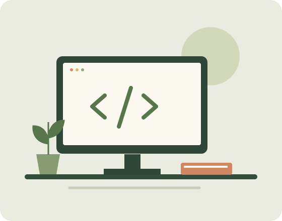

ESTUDIANTE · EXPLORADOR DIGITAL
Hola, soy
Maria Guillen.
Estoy aprendiendo a transformar ideas en páginas web. Este es mi primer espacio para compartir quién soy y lo que me inspira.
Conoce un poco de mí
01 / SOBRE MÍ
Aprender haciendo.
Soy estudiante y me interesa el desarrollo frontend. Disfruto descubrir cómo se construyen los sitios que usamos cada día y practicar con HTML y CSS. Mi objetivo es crear experiencias claras, útiles y accesibles.
02 / LO QUE ME MUEVE
Mis intereses y habilidades
Desarrollo web
Dar estructura a mis ideas con HTML y aprender a diseñarlas con CSS.
Diseño y creatividad
Explorar colores, formas y nuevas maneras de comunicar una idea.
Aprendizaje continuo
Resolver problemas, practicar y compartir lo que voy descubriendo.
03 / PARA SEGUIR EXPLORANDO
Mis sitios favoritos
Recursos que acompañan mi aprendizaje.